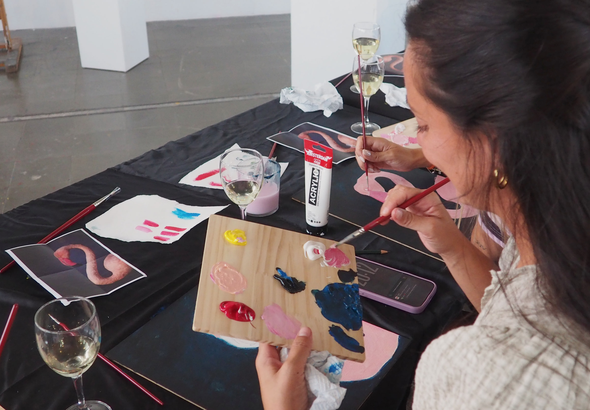

studio.
enter the practice.
Contemporary art becomes something to participate in — through artists, materials, gesture and shared attention.
Discover Studio ↓commission Studio.
For companies, hospitality, brands, clubs and institutions: one-off experiences, private events and recurring cultural programmes.
Explore for organisations →join Studio.
For adults, young adults, children and families: public sessions, private groups and shared artistic experiences.
Explore open Studio →different formats.
one artistic standard.
A cultural alternative to generic team building, shaped around the team and the artist.
organisations →Artist-led programming for guests, clients and communities.
hospitality / brands →Public artist-led sessions for adults and young adults.
people →A private artistic experience for teams, friends, guests or occasions.
private →Contemporary art through material, experimentation and play.
children →Shared artist-led experiences for adults and children.
families →A recurring sequence of artists and practices across the year.
organisations →
Private Studio.
A group enters the working language of an artist and experiences the process through material, gesture and conversation. Senso shapes the format around the people, place and reason for coming together.
Plan a private Studio →we do not start from a workshop catalogue.
one experience can become a cultural programme.
Different artists and practices across the year, built around your calendar, audience and space.
Discuss a programme →clear enough to buy.
planning something?
Tell us the group, date and context. We will shape the right Studio format.
Request proposal →join the next Studio.
Discover upcoming sessions for adults, young adults, children and families.
See sessions →